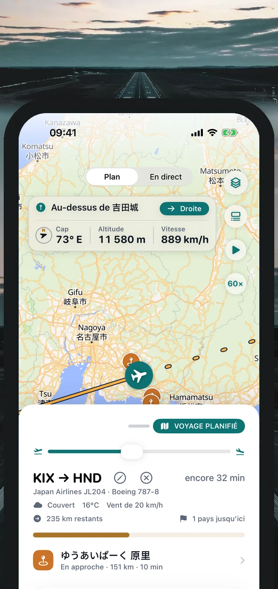
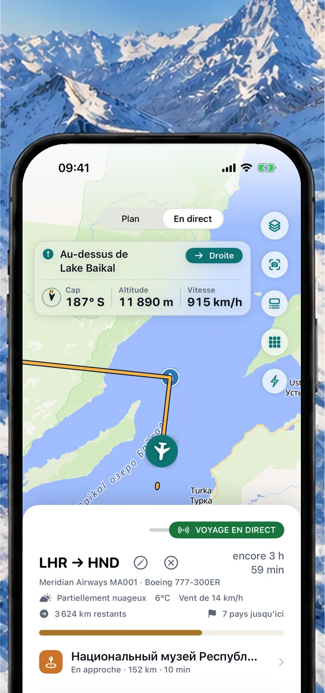
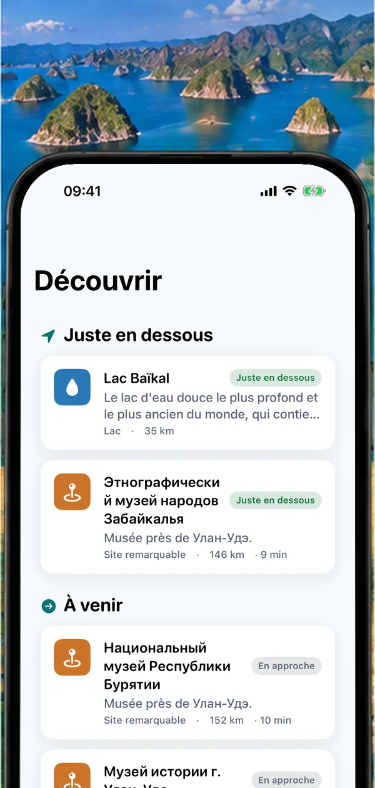
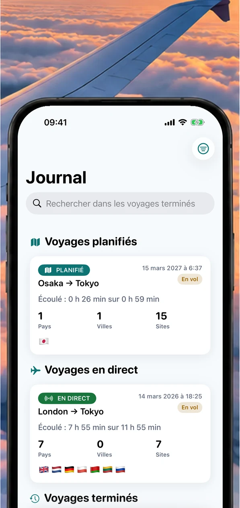
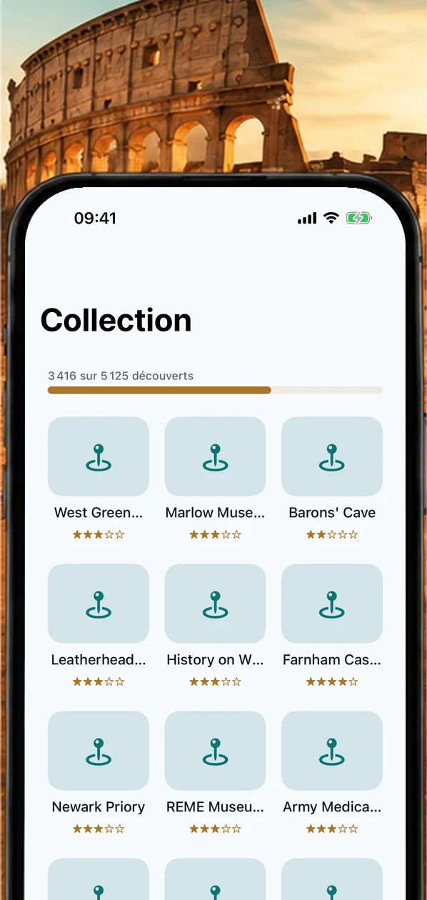
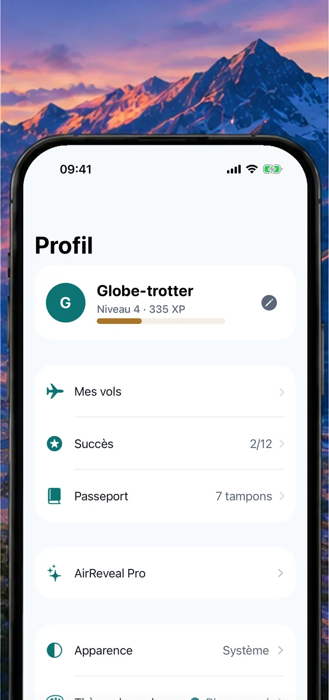
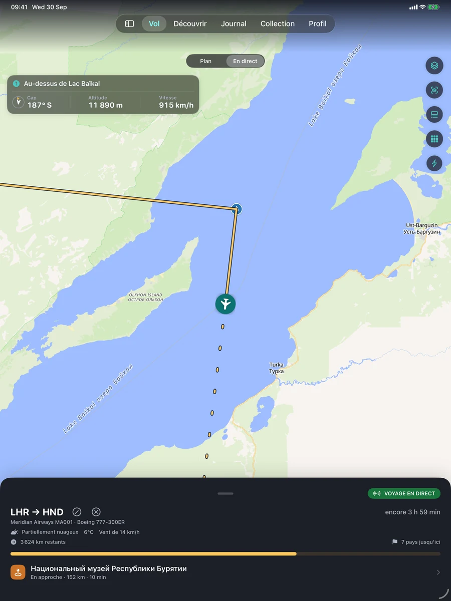
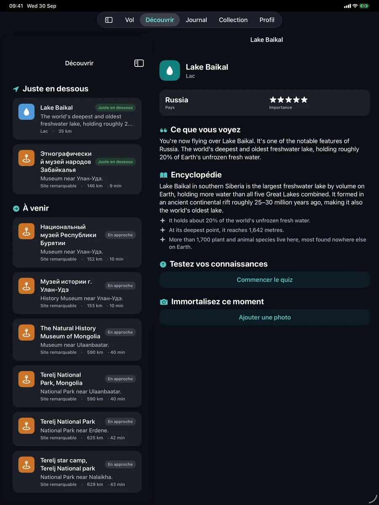
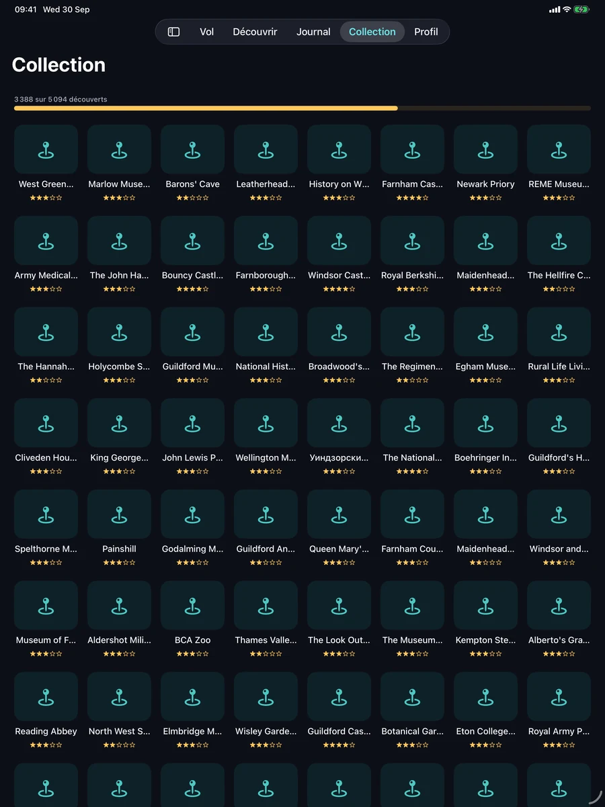

En dessous
En vol : ce que vous survolez, de quel côté regarder, et une caméra qui le désigne.
Votre propre vol et les avions autour de vous, dans une seule app. Regardez en bas depuis votre siège : AirReveal nomme le monde sous vos ailes. Regardez en haut depuis le sol : il révèle l'avion qui passe.
En vol : ce que vous survolez, de quel côté regarder, et une caméra qui le désigne.
Au sol : tous les avions autour de vous sur un radar et une carte en direct. Touchez-en un pour révéler son vol, puis suivez-le.
Suivez votre vol par GPS, même en mode avion : AirReveal nomme les montagnes, villes et côtes en dessous à mesure que vous passez.
Votre position sur une carte plein écran, sans Wi-Fi à bord.
Parcourez toute la route avant de partir et voyez ce qui vous attend.
Tenez votre téléphone au hublot : les sites dehors sont nommés sur l'image de la caméra.
Gauche ou droite, les sites que vous verrez, et si vous aurez le coucher de soleil.
Altitude, vitesse et cap sur la carte, et sur l'écran verrouillé.
Chaque voyage gardé, à revoir là où vous l'aviez laissé.
Au-dessus de vous affiche tous les avions autour de vous sur un radar et une carte en direct, grâce à des données de vol communautaires et gratuites. Touchez-en un pour le révéler.
L'avion le plus proche, à quelle distance et dans quelle direction, avec le radar tourné vers où vous regardez.
Choisissez le type de carte ; après le coucher du soleil, Lumières de nuit montre les rues éclairées.
Visez le ciel : les avions sont marqués, avec une flèche vers celui que vous suivez.
Une photo de cet avion précis, sa route, son altitude, sa vitesse et son modèle.
Gardez un avion sur la carte jusqu'à 800 km, le long de la route qu'il a vraiment suivie.
Avec leur propre icône, du SAMU aérien à la surveillance du trafic.
Le radar au poignet, une touche quand l'avion suivi approche, et la progression de votre vol.
Au-dessus de vous sur l'écran d'accueil et l'écran verrouillé, avec le radar.
L'avion suivi sur l'écran verrouillé et dans la Dynamic Island : à quelle distance, dans quelle direction, à quelle altitude.
Votre montre interroge votre iPhone, pas Internet. Rien n'est chargé quand la surveillance est coupée.
Chaque jeu fonctionne pendant vos vols et avec les avions au-dessus de vous, tout sur votre iPhone.
Chaque avion révélé, avec vos records : le plus haut, le plus rapide, le plus proche.
Bingo des découvertes en vol ; Bingo du ciel depuis chez vous : un hélicoptère, un vol cargo, un jumbo.
Trois petits défis par jour, renouvelés à minuit.
Avions courants, rares ou légendaires, et une petite question sur chaque modèle.
Pas pour vous ? Désactivez les jeux dans Réglages › Jeux pour un simple suivi de vols. Votre carnet reste.
Choisissez un style : chaque écran le suit, du tableau Au-dessus de vous aux réglages. Tous respectent les mêmes normes d'accessibilité.
Les tableaux de départs à palettes : ambre sur noir.
Un écran d'aéroport moderne : blanc et or sur bleu nuit.
Des cartes aux couleurs de votre thème, en mode clair ou sombre.
Où vous êtes, ce qu'il y a en dessous et quelques anecdotes sur tout cela, dans une app sereine et simple à utiliser à tout âge.
Prévisualisez votre itinéraire avant même d'arriver à l'aéroport, puis parcourez tout le trajet pour voir ce qui vous attend.

Suivi de vol en direct, belles cartes et vues à couper le souffle, même hors connexion.

Sites fascinants, villes et merveilles naturelles en temps réel.

Revivez vos voyages et collectionnez les lieux qui les ont rendus spéciaux.

Transformez vos voyages en une carte personnelle du monde.

Jouez aux quiz sur les lieux et au Bingo des découvertes, gagnez des succès et tamponnez votre passeport.

Nul besoin de s'y connaître en avions pour apprécier AirReveal. Si vous vous êtes déjà demandé ce qu'il y a en dessous, elle est faite pour vous.
Altitude, vitesse sol et cap, votre type d'appareil et votre numéro de vol, et un carnet de tous vos voyages.
Même la ligne que vous prenez chaque semaine survole quelque chose de nouveau. Téléchargez avant d'embarquer et suivez la progression d'un coup d'œil sur l'écran verrouillé.
Partagez le hublot avec le Bingo des découvertes et des quiz rapides. Chacun son tour, le premier à compléter une ligne gagne, puis partagez le récap du voyage à l'arrivée.
Trois questions rapides sur chaque lieu, des succès à débloquer et un tampon de passeport pour chaque pays survolé. Des écrans clairs et simples, sans jargon, et un texte qui s'agrandit selon les réglages de votre appareil.
Une expérience adaptative pensée autour de l'appareil que vous avez en main, d'un coup d'œil rapide sur iPhone à une grande carte de vol sur iPad.



Chaque siège hublot pose la même question. AirReveal y répond : votre position en direct sur la carte, les sites, villes et merveilles naturelles sous et devant votre avion, et ce qui arrive ensuite.
De vrais sites le long de votre itinéraire, nommés au moment où vous les survolez, grâce au GPS de votre appareil.
Sachez si un site, ou le soleil de l'heure dorée, est à gauche ou à droite pour choisir le bon hublot.
Une carte de vol hors connexion qui n'a besoin que du GPS. Téléchargez le contenu de votre vol avant le départ et c'est prêt.
Enregistrez chaque vol, collectionnez les lieux vus et tamponnez votre passeport des pays.
Ouvrez AirReveal : l'app utilise le GPS de votre appareil pour vous placer sur la carte et nommer les sites, villes, côtes et merveilles naturelles sous et devant votre avion, en temps réel.
Oui. Le suivi en direct utilise le GPS de votre appareil, qui n'a besoin ni du Wi-Fi de bord ni d'un signal mobile. Téléchargez le contenu hors connexion d'un vol avant le départ pour avoir cartes et sites prêts pour le voyage.
AirReveal vous indique si un site, ou le soleil à l'heure dorée, est à gauche ou à droite de votre appareil, pour que vous sachiez par quel hublot regarder.
Non. AirReveal est un compagnon personnel pour le voyage lui-même. Ce n'est pas un service officiel de statut de vol, de contrôle aérien ou de sécurité aérienne : renseignez-vous auprès de votre compagnie et de l'aéroport pour les portes, retards et consignes de l'équipage.
Oui. Enregistrez chaque vol dans votre journal, collectionnez les sites découverts, tamponnez votre passeport des pays et suivez votre progression grâce aux succès.
Pas du tout. Indiquez votre départ et votre destination, AirReveal s'occupe du reste. Notre guide d'utilisation (en anglais) vous accompagne pas à pas et explique les termes et abréviations que vous pourriez voir.
Vous pouvez planifier et prévisualiser des vols et suivre votre premier vol en direct gratuitement. AirReveal Pro débloque le suivi GPS en direct continu et toute l'expérience en vol.
Planifiez et prévisualisez des vols et explorez l'expérience avant le décollage.
Débloquez le suivi GPS en direct continu et toute l'expérience en vol.
Les prix s'affichent dans votre devise sur l'App Store.
AirReveal est disponible sur l'App Store pour iPhone et iPad.